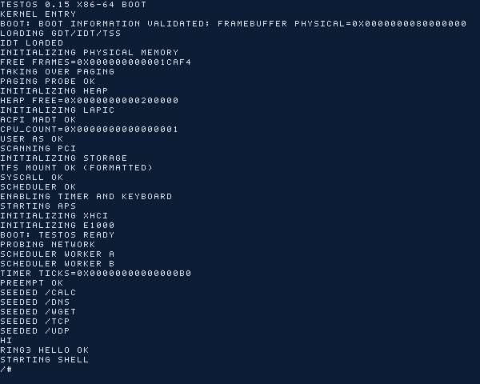
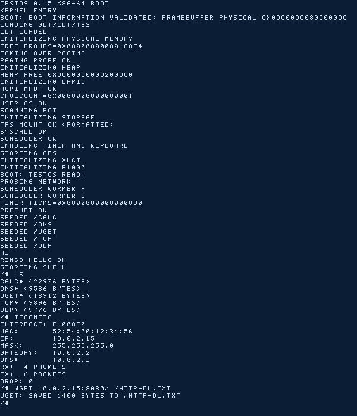
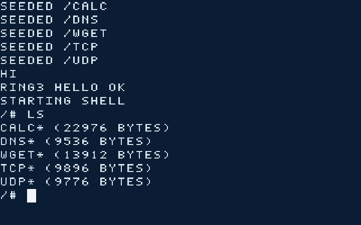

TestOS is an x86-64 operating system written in C and booted through UEFI by Limine. It implements persistent storage, networking, and user-space utilities so that file and socket operations can be followed from the shell through kernel services to the device interface. QEMU provides the test environment for disk operations, DHCP, TCP, and HTTP interoperability.
TestOS
Overview
System architecture
Limine loads the kernel and supplies the initial execution environment. The kernel provides preemptive multitasking, user-mode execution, and interfaces to the storage and network drivers. User-space programs exercise these services through shell commands, file operations, socket tools, and an HTTP server.
| Boot and processes | UEFI handoff through Limine, preemptive multitasking, and user-mode programs |
|---|---|
| Storage | Persistent TFS filesystem with ATA, AHCI, and NVMe data disks |
| Networking | E1000e, ARP, IPv4, ICMP, UDP, TCP, DHCP, and DNS |
| Input | PS/2 keyboard interaction; xHCI controller bring-up |
| Multiple CPUs | Application processors initialize and then park; the boot processor runs the workload |
QEMU operation
The recording shows the system reaching its shell, inspecting disks, and downloading a file. It was captured from the same boot image used for the retained tests. The screenshots isolate the terminal regions needed to examine boot output, the HTTP transfer, and a mounted data disk.



Testing and results
The retained CI run includes a boot-image build, shell checks against ATA, AHCI, and NVMe data disks, and separate network and HTTP tests. The TCP check opens 25 connections carrying 1,021 bytes each. Packet inspection checks the handshake, data acknowledgments, echoed payload, and connection close, rather than relying only on a successful shell command.
These checks establish the reported behavior in QEMU. The multiple-CPU and USB work remains limited to the initialization behavior described above; the results do not establish general hardware compatibility.
References
The source used for the recording and its test workflow identify the implementation described here. Original screenshots, serial logs, and recording checksums remain available in the capture records.